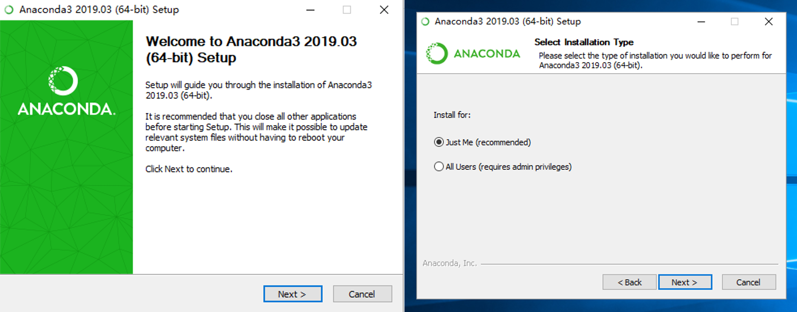

常见问题及解决方法¶
Warning
Windows安装环境
python（建议使用Anaconda安装python3.7.0的环境）
numpy（安装ALKEMIE之前必须预先安装numpy，否则c语言相关脚本无法编译）
Visual Studio 14++ (C和C++编译依赖)
Linux安装环境
python（建议使用Anaconda安装python3.7.0的环境）
numpy（安装ALKEMIE之前必须预先安装numpy，否则c语言相关脚本无法编译）
gcc (GCC) 4.4.7 20120313 (Red Hat 4.4.7-4)
可视化界面需要：glibc/2.16
安装python¶
下载windows版的Anaconda安装包，下载地址： Anaconda

下载完成后，鼠标双击启动安装程序，保留默认选项设置，按照指示步骤安装。只有以管理员身份才可选择所有用户安装，一般情况下勾选“Just Me”即可。
{kind=link}
安装完成之后需要添加环境变量。
鼠标右击桌面上的此电脑图标，在弹出的右键菜单中点击属性，打开系统设置。
依次选择高级系统设置-环境变量
选择系统环境变量中的Path，点击编辑
新建并添加五条环境变量
Warning
user_path代表用户自定义的Anaconda安装位置，安装目录不能有中文字符
# 以5.3的Anaconda3版本为例
# user_path为Anaconda安装位置
user_path/Anaconda3-5.3
user_path/Anaconda3-5.3/Scripts
user_path/Anaconda3-5.3/Lib
user_path/Anaconda3-5.3/Library
user_path/Anaconda3-5.3/Library/bin

给conda和pip添加清华源镜像，具体方法参考：
输入以下命令配置 pypi清华镜像
pip config set global.index-url https://pypi.tuna.tsinghua.edu.cn/simple
输入以下命令配置 conda清华镜像
conda config --add channels https://mirrors.tuna.tsinghua.edu.cn/anaconda/pkgs/free/
conda config --add channels https://mirrors.tuna.tsinghua.edu.cn/anaconda/pkgs/main/
conda config --set show_channel_urls yes
Warning
如果不添加清华镜像源，会有一个依赖包fastTSNE-0.2.13.tar.gz无法正确下载，可以手动通过连接下载0.2.13版本并通过pip安装https://pypi.tuna.tsinghua.edu.cn/simple/fasttsne/
conda镜像中没有fastTSNE包，需要pip的清华镜像
创建python3.7环境
# 在Anaconda中创建python3.7环境
conda create --name env_name python==3.7
# 检索后输入yes，等待安装完成
# 激活python3.7环境
conda activate env_name
Hint
更进一步的Anaconda使用教程及创建python环境，参考：https://zhuanlan.zhihu.com/p/94744929
安装Visual Studio Installer¶
下载Visual Studio 2019安装包，下载地址：https://visualstudio.microsoft.com/zh-hans
鼠标双击启动安装程序，选择使用C++的桌面开发，按照默认路径安装
安装过程大约需要花费半个小时左右，安装完成后必须按照提示重启电脑

其它常见问题¶
无法登录ALKEMIE软件
解决方法：请联系管理员获取License，并注册账号。
无法连接远程数据库，无法通过远程服务器交任务
解决方法：目前ALKEMIE服务器只部署在北航校内服务器和广州超算天河服务器，校外连接北航校内服务器只能通过EassyConnect 挂VPN访问。连接天河超算服务器需要通过HillStone软件挂VPN访问并且拥有天河计算账号权限，如果无法连接请联系管理员。如果要自己搭建服务器环境，该过程相对比较复杂，也请与管理员联系。
pip install 安装过程中遇到如下错误：

解决方法：请更换pip镜像至清华源，因为官方pip目前暂停支持fastTSNE软件包，详情参考2.2中第三步。
conda安装过程各种遇到如下警告：

{kind=link}
运行Alkemiems-akpad无法启动ALKEMIE软件
{kind=link}
解决方法：如果遇到这个问题，是因为conda 环境变量不正确，重新添加更新conda环境变量即可。